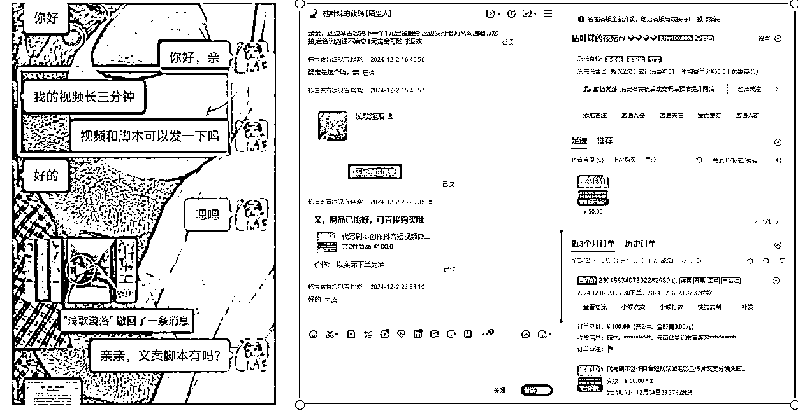

来源：https://cxqeimz77vr.feishu.cn/docx/YPHpdpsCrodjAYx3PLqcJmOYnyh
各位生财圈友大家好，我是饭饭，
龙珠圈友，生财航海家，生财实战访谈嘉宾，目前精耕于AI写作变现，最早入局AI写作变现的一批人。
很久没有来星球输出优质文章啦，因为都在偷偷搞钱，目前我们已经累计交付剧本写作200+，这个品类累计变现近5w，这次依旧给大家带来一个保姆级的通过代写剧本月入过万的方法论分享，目前剧本处于增长阶段，适合新人搞钱。
内容由浅入深，由易到难，目的就是为了让新手看完少走弯路，老手看完恍然大悟！
在文末放了剧本的合集大礼包，大家可以直接复制借鉴使用！
万字长文输出，高价值，预计阅读时长超过15分钟，看完觉得有用的宝子们记得动动发财的小手给饭饭点赞支持，也希望大家多多留言分享，一起头脑碰撞，~
目前精耕与AI写作变现赛道，也是互联网上最先入局AI写作变现的一群人，我来自于贵州省一个比较偏僻的农村，我和村子里的其他小伙伴一样，童年是被煤油灯照亮的。小时候父母通过务农种庄稼供兄弟姊妹上学，父母没上过学，也就鼓励我们"多认几个字，将来去镇上当个老师。"那是村里人想象力的天花板。
我的整个经历就是农村出身，普通大学本科毕业，毕业后没找工作，趁着自己的一生牛劲，借钱、网贷投了50多w自己开实体店、亏的一塌糊涂，负债24w多，转型线上、做电商，做传统的代写店铺。后面大力拥抱AI，从最开始的2个人组合到目前公司20人的规模，逐渐的在AI时代找到自己的方向感。精耕AI写作，将在赛道琢磨清楚，和更多的圈友一起深度交流，一起生财有术。
我是2023年加入生财的，直到2024年，在圈友的见证下，我带着自己的AI写作团队拿到了AI写作变现年营收突破500w的结果，目前8个天猫旗舰店，以及闲鱼矩阵、小红书聚光都还做的不错。搭建了万人写手交付团队，孵化了几家工作室，做了AI写作各种细分领域，也都拿到了不错的结果，做了各大社群的AI代写教练和分享嘉宾。
希望我的经历能给和我一样的普通人一个参考，普通人也可以把事情做到不普通。AI时代，大家一起拥抱AI，一起牛逼！
目前AI写作能够变现的领域非常多，里面很多适合新手入门的，但是从2024年末开始，我们自己内测剧本的写作，发现这个市场非常的蓝海，需求也很大，能够接到不同客单价的稿件需求。有十几二十元的，有几百元的，还有大几千元的单子，在做的过程中呢，也发现这个领域的知识非常多，而且很有趣！！！
我目前主要获客是闲鱼和淘宝平台，这是我截图接到客单价还不错的单子，借助AI来辅助交付，交付质量客户还比较满意的，也产生了一些复购和长期商单合作。
我和很多小伙伴一样，都是找项目的时候加入的星球，因为之前做实体店亏的一塌糊涂，陷入负债的深渊，后面转型做电商做的传统写作，在AI出现以后就快速入局AI，使用ai工具来进行写作和简历优化，快速拥抱赚到点小钱。
因为自己是文科生，所以我是从最开始的看不懂AI技术，连最基础的解决网络问题、GPT工具注册、AI工具使用等等都搞定不了，到现在，可以熟练掌握ai工具，用来写各种文体，变现、做流量，带着团队拿结果。
在这期间随着交流的人越多，然后星球上很多圈友的边界能力非常强，在交流的时候就去拓品类、挖平台，我自己前后做了闲鱼、拼多多、淘宝、天猫、小红书和视频号等平台，都尝试过做写作，也跑通拿到了小结果。
后面平台跑通以后呢，2024年我们在做的时候就发现剧本的异常值，突然一下就暴增了，然后我们就同时在闲鱼和淘宝两个平台上架剧本的链接，自然也接到了客户咨询。成功的跑通了从接单、售前解答、售后维护到客户指导等环节。
我自己团队也是从最开始在剧本这个赛道零经验、零基础甚至以前都没接触过的情况下，去把细分领跑通！然后现在做的还比较擅长剧本的创作，也通过剧本去赚到超过六位数，所以我也强烈建议圈友们每天花时间来星球上看一下内容，只要在实干的路上，星球真的能够帮我们和其他人拉开差距！
干就完了，实战定能实战兴己！
简单的做了市场调研以后呢，我们就开始上架闲鱼的剧本链接，同步进行的情况下也在跑淘宝的剧本链接，目前我们已经累计交付剧本数量超过200+，基本上都是短片剧本或中等篇幅的剧本，目前签约领域还在探索，希望和各位圈友多多交流。
剧本（Script）是为舞台剧、电影、电视剧或其他表演艺术形式设计的文本载体，是指导表演、构建叙事、塑造角色的核心创作蓝本。它不仅包含角色的对话和情节发展，还详细描述场景、动作、情绪以及技术指示（如灯光、音效），为导演、演员、制作团队提供明确的创作方向。
亚里士多德在《诗学》中提出，剧本需具备情节、人物、思想、台词、场景、音乐六大要素，至今仍影响剧作理论。
我觉得剧本需求的爆发，简单来说是因为 “人人都爱看故事” + “内容产业大爆炸”。只要有需求，那就有钱赚，大家可以从五个方面理解：
抖音、快手、视频号等平台每天需要海量短剧吸引用户。一部热门短剧（比如逆袭、甜宠类、霸道总裁爱上我等等）可能几十集，每集只要1分钟，但必须有强冲突和反转，这就需要大量“快节奏剧本”。
例如：抖音上《重生之我是豪门千金》这类短剧，一周拍完100集，编剧必须快速产出“打脸”“反转”等套路剧本。
其实一部爆款剧本带来的收益非常巨大。比如《狂飙》的剧本让投资方赚了十几亿，这也刺激更多人砸钱买好剧本，咱们普通人接触的不多，但是借助AI，只要提示词用的好，万一你写的剧本被选中了呢。
短视频平台按播放量给创作者分钱，写剧本成了“流量生意”（比如快手短剧编剧月产30部剧本，月入超10万以上，我们普通人开个小店做剧本代写，也是月入1w以上）。
其实总结起来，也是就，人们永远爱看故事，而手机、电脑、电影院……所有屏幕都在抢故事，剧本自然成了“硬通货”。从好莱坞大片到乡村大妈拍的土味短剧，背后都离不开一张写着“谁说什么、做什么”的纸——这就是剧本的力量。
剧本也有很多不同的类型，我觉得剧本就像“故事的不同包装”，不同场景需要不同写法。主要分五大类，大家一看就懂：
电影剧本：写的时候要想着大银幕，比如《流浪地球》《哪吒2》《唐探》等等的震撼场面，必须详细描述特效和镜头角度。
电视剧本：一集40分钟，每集结尾留个钩子（比如《甄嬛传》皇后突然晕倒），让人急着看下一集。
舞台剧本：重点在台词和现场互动，比如《雷雨》里人物吵架，得标注“摔杯子”“灯光骤暗”。
甜宠剧本：专攻少女心，比如“总裁爱上小秘书”，台词要多撒糖（“天凉了，王氏该破产了”）。
悬疑剧本：每10分钟埋一个谜题，比如《隐秘的角落》开头小孩推老人下山，瞬间勾起好奇心。
逆袭剧本：底层小人物翻身打脸，常见于快手短剧（保洁阿姨亮出黑卡：“这公司我买了！”）。
长剧本：电影2小时起，适合深挖人物（如《教父》三代黑帮家族恩怨）。
微短剧本：抖音1分钟一集，前三秒必须高能（比如直接扇耳光、车祸现场）。
广告剧本：30秒讲完故事，比如支付宝春节广告“打工人的团圆路”，一句话就要催泪。
互动剧本：观众能选剧情走向，比如《黑镜》电影让你帮主角决定杀人还是自杀。
竖屏剧本：专门为手机设计，特写怼脸拍（比如美妆博主短剧“素颜→化妆”对比）。
AI生成剧本：输入关键词自动出大纲，比如“穿越+宫斗+大女主”，适合量产网文改短剧（我也是最简单的）
游戏剧本：要给玩家挖坑选路线，比如《恋与制作人》里四个男主的不同对话分支。
动画剧本：动作得夸张到帧，比如《猫和老鼠》汤姆被压成纸片，剧本得写“挤扁→弹回原形”。
企业剧本：连员工培训都要剧本！比如教销售怎么应对客户砍价，直接写对话模板。
那普通人入局的时候自然是找简单的，先找感觉再变现，“抄爆款、套模板、盯甲方”，例如：代写甜宠打脸剧、信息流广告、知乎短故事，这三个赛道门槛低、来钱快，适合新手。记住：先模仿再创新，先量产再提质！
我一直觉得选平台非常关键，“前期闲鱼、小红书、淘宝或者抖音快手接代写，中期知乎盐选卖故事，后期投稿签约赚长期”，按这个路径走，新手最快2周就能变现，因为代写的需求是非常大 的，记得：多拆解爆款、少自我感动，先活下来再谈理想。
如何这个赛道的话，可以从几个思路去考虑出发：
猪八戒网、boss直聘、淘宝大店等等。
我们要做的就是直接去上面接单，然后搜“剧本代写”任务 ，找到一些甲方需求，带一些自己的案例，接单时附3个过往案例（没作品就仿写，或者我放文档里面这个大家也可以用）。
然后优先接500元以下小单（大单竞争激烈，新手做起来比较难，先积累经验值）。
这算是代写里面的细分领域，不管是在自媒体平台还是电商平台，都有一个蓝海需求。
我们去做的时候可以通过闲鱼、小红书、或者淘宝、拼多多等平台去开店引流，找到有剧本写作需求的甲方。具体思路就是和图上我提供的一样，要么在小红书这个平台去直接发布剧本代写相关的笔记，这种账号不需要粉丝，低粉爆的概率挺大的，一篇笔记如果小爆，带来的收益会不错。同样的思路，在闲鱼、在淘宝或者拼多多，都可以执行，具体开店的方法论在星球之前也做了分享，圈友可以作为参考。
方法都是在实战中去不断累积修正的，大家对剧本的平台分类有了一个基础的认知以后，就可以根据自己的实际情况去展开接单或者签约投稿变现，我的建议是：
第一步：新手村练级（1个月内）先接小单混经验，别想一口吃成胖子。
第二步：升级打怪（2-3个月）找专攻能赚钱的平台，别在没流量地方死磕。
第三步：剧本大佬之路（3个月后）去抱紧平台大腿，试试签长约赚安稳钱。
这儿我给大家分享一下我们快速的去接单然后借助AI写稿的方法论。
很多新手刚入门的时候其实应该是有点担心有点顾虑的，根据经验先给大家悄悄说一下;
1.别纠结文笔！甲方只要套路化模板，都是借鉴爆款。
2.别怕丢人！遇事不决问AI,没有案例库都可以自己写一份案例库。
3.别等完美！先接单再优化，接的单多了，啥都会了
其实做项目有一个秘诀，执行力比天赋重要！7天发50条接单信息，不可能没单，500块只是开始！跑通流程后，复制放大就能月入过万。
我在前面给大家分享了比较容易接单的平台，选择短期快速变现的，猪八戒网、boss直聘、淘宝大店或者直接在闲鱼、小红书开店。
然后去干啥呢？去发产品、去发笔记、去大量的应聘。
没作品？直接伪造！用AI,3分钟伪造案例库，当然，伪造案例库的核心不是“造假”，而是降低甲方决策成本。用专业话术、统一视觉、细节把控，让甲方觉得你“靠谱”，自然愿意掏钱。其实，这个行业80%的“资深案例”都是包装出来的，你先装得像，才能活得久。
这儿的话我建议直接国产AI工具，生成内容更符合国内短视频平台调性，（deepseek或者腾讯元宝）都可以！
步骤1：打开DeepSeek
步骤2：输入精准指令（直接复制）
你是一个专业编剧，需要写一段300字的战神归来短剧剧本，要求： 场景：主角被丈母娘辱骂，隐藏的战神身份曝光 关键点：丈母娘下跪、保镖出场、黑卡打脸 包含专业术语：分镜号（如SC-01）、景别（中景/特写）、情绪升格 输出格式： 【分镜号】场景描述（画面+台词）
步骤3：生成内容示例
【SC-01】别墅客厅（中景） 丈母娘（摔茶杯）：“你这个废物，不离婚就滚！” 林峰（低头握拳特写）：“您确定要这样？” 【SC-02】大门外（仰视镜头） 10辆奔驰刹停，黑衣保镖齐喊：“恭迎战神归位！” 丈母娘（后退半步）：“你...你到底是谁？！” 【SC-03】客厅（慢动作升格） 林峰（甩出黑卡砸桌）：“这张卡能买你全家的命！” 丈母娘（瘫坐地上）：“我错了！求您放过我们！”
步骤4：做成案例
不亏就是赚的，别被白嫖哈哈哈。
什么是“无脑小单”？
就是那种标准化高、需求简单、甲方要求低的小额订单，订单的金额小，但是AI做起来很方便的那种。例如、短视频15秒口播文案、小红书探店种草文案、短剧剧本单集分镜等等。
当然，也有一些大概率会白嫖的，就例如我们在接单的时候就遇到白嫖的，遇到过几次，然后也长经验了，我整理这个表格上面的内容，大家可以提前必坑。
核心公式：“需求拆解→AI生成→人工微调”
① 输入详细指令：
如果是短剧本的话建议直接使用deepseek或者腾讯元宝
实例1：快速生成抖音上那些狗血、炸裂、激情的短剧：
你是一个专业短剧编剧，需要写3集逆袭打脸剧，每集1分钟。 要求： 第1集：女主穿地摊货参加同学会，被校花嘲讽，服务员突然下跪喊“大小姐” 第2集：女主继承万亿集团，校花公司破产，哭着求原谅 第3集：女主让校花扫厕所，拍视频发朋友圈 每集包含：时间节点、场景描述、对话（带爽点台词）
输出结果：
总时长：3分钟（每集1分钟）
核心公式：“极致反差+身份碾压+社死名场面”
时间节点：0:00-1:00
0:00-0:10（酒店门口）
0:10-0:30（包厢内）
0:30-0:50（走廊反转）
0:50-1:00（悬念）
时间节点：0:00-1:00
0:00-0:15（集团顶楼）
0:15-0:40（破产风暴）
0:40-1:00（权力展示）
时间节点：0:00-1:00
0:00-0:20（厕所羞辱）
0:20-0:50（朋友圈暴击）
0:50-1:00（终极打脸）
实例2：（直接复制）：
你是一个专业编剧，需要根据以下需求生成短视频分镜脚本： 主题：战神归来打脸岳母 关键点：隐藏身份曝光、保镖出场、甩黑卡打脸 包含元素：分镜号（如SC-01）、景别（中景/特写）、情绪升格 输出格式： 【分镜号】画面描述 + 台词
输出结果
总时长：60秒 | 核心公式：“身份压制+物理打脸+财富羞辱”
【SC-01】（中景 - 别墅客厅）
画面：岳母将离婚协议摔在茶几上，茶水飞溅到主角林战裤脚。
台词：
岳母（冷笑）：“签了它！我女儿的新男友是赵氏集团少东，你这种废物配不上她！”
【SC-02】（特写 - 林战右手）
画面：林战握拳，指关节发白（镜头抖动模拟愤怒）。
音效：骨骼咯咯声。
【SC-03】（中景 - 全景俯拍）
画面：大门被踹开，十二辆悍马大灯刺破雨幕。
台词：
保镖（齐声）：“西北战区全体，恭迎战神归位！”
【SC-04】（特写 - 岳母瞳孔）
画面：瞳孔剧烈收缩，倒映出林战撕碎离婚协议。
台词：
林战（低沉）：“三天前，赵家求我收购他们51%股权。”
【SC-05】（情绪升格 - 慢动作）
画面：黑卡甩在岳母脸上，卡片旋转特写镀金卡号。
台词：
林战：“这张卡买你全家贱命，还有剩！”
【SC-06】（特写 - 黑卡插进西瓜）
画面：黑卡穿透果盘西瓜，汁液溅到岳母颤抖的手背。
音效：刀锋破风声。
【SC-07】（中景 - 仰视镜头）
画面：保镖队长拎起赵氏少东扔到岳母脚边。
台词：
队长：“赵家已破产，按您吩咐留条狗命。”
【SC-08】（特写 - 岳母嘴唇）
画面：嘴唇哆嗦着碰到黑卡，口红蹭掉一块。
台词：
岳母（哭腔）：“女婿...不，战神大人...”
【SC-09】（情绪升格 - 360度环绕）
画面：林战踩住岳母想捡卡的手，作战靴碾压特写。
台词：
林战：“捡？你也配？”
【SC-10】（大特写 - 监控屏幕）
画面：监控显示岳母跪爬捡卡，画面突然雪花（卡被碾碎）。
字幕：“战神一怒，尸骨无存”
②人工微调
这个环节很简单了，已经到了最后交稿的状态，人工修改的核心原则就是：用人类瑕疵覆盖AI痕迹！
常用的几个方法：
AI漏洞：常用名雷同（如“林战”“苏雪”）
人工微调：百度搜索“本地企业名录”，替换为真实公司名（例：深圳改“腾飞实业”）
AI漏洞：台词过于书面化
人工微调：加入语气词：“啊、呢、呗” （例：“这卡能买你全家的命——呢！”）
AI漏洞：线性叙事过于工整
人工微调：暴力破门（0:00-0:05）→ 闪回岳母羞辱（0:05-0:15）→ 打脸（0:15-1:00）
AI漏洞：缺乏生活化细节
人工微调：用“下意识动作”暴露角色心理（如说话前扯领口、舔嘴唇）
AI漏洞：缺乏时效性
人工微调：蹭热点：抖音热搜词“失信被执行人”“限高令”
我们做这个赚的是劳动报酬，如果不能区分好客户，写的剧本客户是可以直接复制粘贴就使用的，所以在前期的时候对客户的区分判定也很重要，后期对客户的处理方法同样很关键。
我们之前也遇到了不少白嫖的客户，也遇到了不少因为剧本老师不够专业产生的纠纷，但是，解决了就很棒！
因为剧本也是入局的时间还不是很久，经验也没那么丰富，我们就先说给客户写剧本踩了一次又一次的坑。
案例1：之前写的一部短剧本，客户说"按你的专业来"
经过：客户要求不明确，写了3版后甲方突然要求改玄幻修仙题材
损失：倒贴200元的费用给剧本老师，自己承担
案例2： 大学生团队骗稿
经过：对方称"学校项目没预算"，先付了部分定金，拿剧本参赛获奖后失联，没拿到尾款。
损失：损失了几百块的尾款，再也不能做这种蠢事。
还有一些案例，我就不吐槽了，伤心往事就随风吧，我总结了避坑指南给大家，保存收藏使用！
| 客户售前咨询话术 | 大概率会遇见的坑 | 客户目的 | 饭饭建议+话术模板 |
|---|---|---|---|
| 需求模糊， | 客户自己也不知道想要什么，用抽象词汇掩盖业务目标不清晰。 | 三步锁单法： 1. 追问："具体对标哪个品牌/影视剧风格？" | |
| 预算不高， | 想用白菜价买钻石服务 | 先压价再无限加需求 | 砍价预期管理术： |
| 先试写一集、 | 套取创意/骗稿常用话术、 | 免费获取初稿后消失或自行改编、或者白嫖、 | 反白嫖技巧： |
| 对标S级项目 | 想用低成本模仿爆款 | 要求复刻《鱿鱼游戏》却只给500元预算 | 需求降级法： 1. 拆解爆款元素："您最想借鉴的是A（反转剧情）、B（视觉特效）、C（角色关系）哪个部分？" |
| 年轻人喜欢的风格 | 甲方不懂Z世代文化硬蹭热点 | 要求加入过时网络用语或烂梗 | 数据碾压话术： |
| 改到满意为止 | 无休止修改的开端 | 利用合同漏洞无限白嫖 | 合同防御： 1. 明确修改次数："费用包含3次修改，超次按50元/次收费" 2. 限定修改范围："不接受颠覆剧情走向或人设的调整" 3. 用「腾讯电子签」添加补充条款："修改意见需书面确认，口头需求无效" |
AI直出，全程15分钟不到，收费50元

我之前自己也拍了20多个信息流脚本，很清楚，短剧本质是“情绪过山车”，所有技巧围绕“更快！更狠！更直白！”展开。记住：让观众在蹲厕所的3分钟里爽到握拳尖叫，才是好剧本！清楚这些注意事项，更容易写出好内容。
剧本是从教演员的角度来写的，尽量的简单易懂。演员需要知道“怎么演”，而不是“镜头怎么晃，不要从导演角度来写。
如果写出来的抽象内容太多了，大概率会被返修多次或者不过，我之前在拍信息流脚本的时候就遇到，搞一些抽象词，真的会被骂，演员最恨的抽象词。
演员最恨的抽象词：
❌ 一夜旖旎、霸气侧漏、心如刀绞、眼神拉丝
正确打开方式：
剧本大多数都是为了写出来，教演员怎么做，生僻字词太多的话不行，给剧本里面的人物起名字的时候要为了演员好记清楚，禁用生僻字，例如：甯、彧、婠等等，可以用职业标签来起名，张医生、李总、王警官（降低记忆成本）台词也不要文言文，不要长句子、不要假大空。
如果自己接单，自己小红书或者淘宝闲鱼等平台开店接的单子，一定是得先付定金以后再开始写作的。不要被白嫖就是对的自己接单最好的保护啦，先建立信心、提高熟练度、掌握技能，开始写就会很有意思。
给大家整理了影视剧本的题材分类，大家可以通过这些内容来了解哪些题材更受欢迎，对剧本也算是会有更加深度的理解，在后面写的时候可以多多的参照这些题材，更容易爆火。
：
Q：需要代写剧本的是那些用户？
答：比如独立制片人或小型影视公司。很多可能没有足够的编剧资源，或者项目太多需要外包。然后是广告公司，他们经常需要制作广告、宣传片，可能需要定制剧本。还有企业用户，比如需要年会活动、品牌故事的剧本。教育机构也可能需要，比如学校的话剧表演或教育视频。网络内容创作者，比如短视频、网剧的制作者，他们可能没有时间或能力自己写剧本。游戏公司可能需要剧本杀或互动游戏的剧本。个人用户，比如想自己拍微电影或者求婚视频，但写作能力有限。戏剧团体、话剧社可能需要专业剧本。活动策划公司，比如婚礼、发布会需要定制剧本。最后是文化传媒机构，可能长期需要大量剧本。
Q：需要代写剧本的是那些用户？
1.需要代写剧本的是那些用户？
把我分享的内容掌握，大家可以收藏作为参考使用，我觉得看完你们自己写的话，不管是报价还是谈单话术，都可以勉强及格啦！
总价 = 剧本类型 × 字数（时长） + 附加需求 - 你的接单意愿
Q1：怎么保证写出来的剧本是我想要的？
答：没事！你随便举例子就行。比如“像《你好，李焕英》那种笑着哭的感觉”，或者发几个你喜欢的抖音视频给我，我先深度的分析一下你的剧本需求，然后再照着感觉来，中途写的适合也会给你汇报进度，及时沟通，让你看见质量！
Q2：我只会说“要感人的故事”，但具体咋描述啊？
答：没事！你随便举例子就行。比如“像《你好，李焕英》那种笑着哭的感觉”，或者发几个你喜欢的抖音视频给我，我照着感觉来。
Q3：代写一个剧本多少钱？会不会坑我？
答：当然不会的呀，咱这边也是为了初次给你一个好的交付，写一个好的本子给你，因为咱们行业规定呢也是收30%定金，写完大纲再付50%，写完终稿后结清尾款就可以。
Q4：能不能先写一半再给钱？
答：宝子，这个不行，咱们是先付定金然后开始按照你的需求写作，行规是收30%定金，写完大纲再付50%，交稿后结清尾款。
Q5：多久能写完？我后天就要拍视频了！
答：不要着急，我看了你这个题材我是擅长的，前期一开始咱们多沟通，需求清楚了我很快就给你加急完成啦，我会把你这个放在首位，抓紧处理好！
Q6：写一半发现方向错了，能重来吗？
Q7：剧本写完了算谁的？你会偷偷卖给别人吗？
答：你放心就可以啦，我用的查重软件和大学论文一样，保准原创！万一真有纠纷（比如撞了冷门梗），法律问题我扛，合同里白纸黑字写着呢。
Q8：如果有人说我抄袭怎么办？
答：咱们的剧本都是原创定制，卖给你这边的话我们都是保密保护原创，版权就归你啦，放心可以。
深夜码完这篇万字干货，也是对项目的深度复盘，AI写作是一个值得深挖的领域，光剧本这个细分领域就能够造富很多圈友，深挖里面更是大学问。
感谢亦仁老师搭建的生财星球，在里面认识了很多优秀的生财圈友。
2025年真的是AI让普通人拉开差距的一年，有句话说的很对，AI不是让你写得更快，是让你活得更久。AI时代，先活下来，再活得漂亮，在这个AI重构创作秩序的时代，对商业逻辑的敬畏就是一种修行！
以下是饭饭往期生财精华帖，里面很多方法论，点击蓝色字体可以回看，希望大家见帖受益：
帖子1：《单月营收破20w，AI代写深度复盘，内附多个变现玩法~》
帖子2：《AI+拼多多写作店铺，单店月均10000+姆级教程，内附详细运营方法~》
帖子3：《AI+简历修改，首月盈利7000+，低成本高收益的保姆级教程，附带多个接单平台详细操作步骤及避坑指南》
帖子4：《互联网小白，加入生财2个月赚回了30倍门票复盘》
帖子5：《通过开写作店铺年入50w的项目拆解》
帖子6：《被低估的赚钱项目：揭秘月入1万加的手机壳行业的暴利之路！》